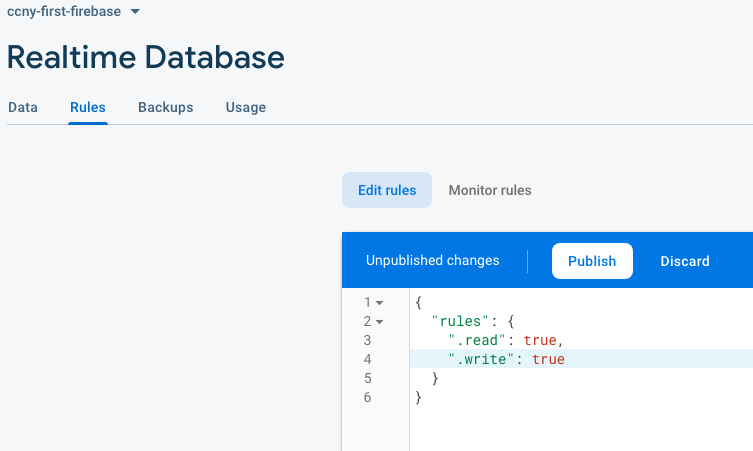

Google Firebase Startup Steps
Click on Get Started
Click on Add Project
Input a project name and whether or not you want to enable Google Analytics
Click on to add firebase to your application
Create an app nickname and register your app
Copy the code that they give you there and paste it somehwere
Go back to the App Home and click on Realtime Database
Click on "Create Database"
Enable the database with "Start in lock mode"
Change your rules to this and publish them (hover the image): 
Firebase Content. View the Javascript and the Console Logs